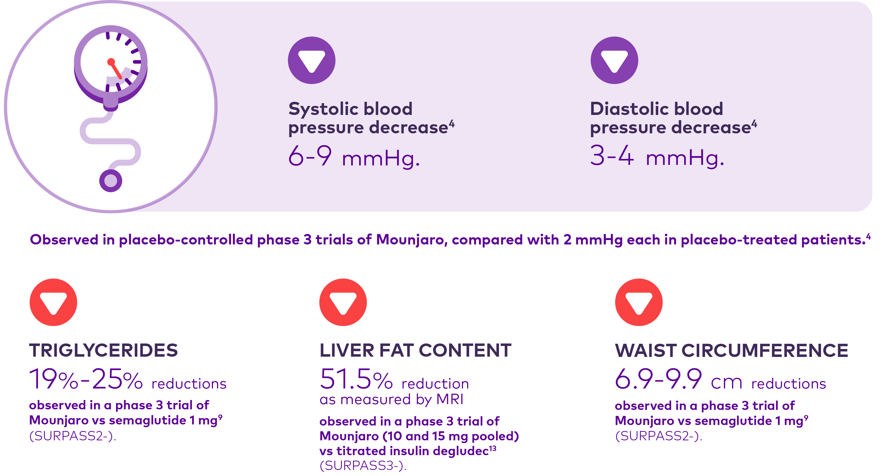

Efficacy Data
★MOUNJARO demonstrated superior mean HbA1c REDUCTIONS with every dose, outperforming comparators in all phase 3 studies

★MOUNJARO demonstrated superior mean HbA1c REDUCTIONS with every dose, outperforming comparators in all phase 3 studies
★MOUNJARO demonstrated superior mean WEIGHT REDUCTIONS with every dose, outperforming comparators in all phase 3 studies
MOUNJARO vs. Placebo
(T2D patients who had inadequate glycemic control with diet and exercise)
- Mean Change in HbA1c from baseline to week 40
Significant Reductions
in HbA1c with MOUNJARO at 40 weeks
p<0.0001 vs placebo
Change from baseline
in
HbA1c at 40 weeks from MMRM
analysis..
Data are LSM
(SE), unless otherwise noted. Estimated treatment differences are LSM (95% CI) at 40 weeks,
modified intention-to-treat population (efficacy analysis set). Arrows indicate when the
maintenance dose of tirzepatide 5, 10, and 15 mg was reached.
- Mean Change in HbA1c from baseline to week 40
Significant Reductions
in HbA1c with MOUNJARO at 40 weeks
p<0.0001 vs placebo
Change from baseline
in
HbA1c at 40 weeks from MMRM
analysis..
Data are LSM
(SE), unless otherwise noted. Estimated treatment differences are LSM (95% CI) at 40 weeks,
modified intention-to-treat population (efficacy analysis set). Arrows indicate when the
maintenance dose of tirzepatide 5, 10, and 15 mg was reached.
-The proportion of participants with HbA1c target values of less than 7∙0% and less than 5∙7%
-Mean change from baseline in bodyweight.
p<0.0001 vs placebo
Change from baseline
in
HbA1c at 40 weeks from MMRM
analysis..
Data are LSM
(SE), unless otherwise noted. Estimated treatment differences are LSM (95% CI) at 40 weeks,
modified intention-to-treat population (efficacy analysis set). Arrows indicate when the
maintenance dose of tirzepatide 5, 10, and 15 mg was reached.
-The proportion of participants with HbA1c target values of less than 7∙0% and less than 5∙7%
-Mean change from baseline in bodyweight.
Significant Reductions
in bodyweight with MOUNJARO 15 mg at 40 weeks
p<0.0001 vs placebo
Change from baseline
in
HbA1c at 40 weeks from MMRM
analysis..
Data are LSM
(SE), unless otherwise noted. Estimated treatment differences are LSM (95% CI) at 40 weeks,
modified intention-to-treat population (efficacy analysis set). Arrows indicate when the
maintenance dose of tirzepatide 5, 10, and 15 mg was reached.

p<0.0001 vs placebo
Change from baseline
in
HbA1c at 40 weeks from MMRM
analysis..
Data are LSM
(SE), unless otherwise noted. Estimated treatment differences are LSM (95% CI) at 40 weeks,
modified intention-to-treat population (efficacy analysis set). Arrows indicate when the
maintenance dose of tirzepatide 5, 10, and 15 mg was reached.
MOUNJARO vs. Semaglutide
(T2D patients who had inadequate glycemic control on stable doses of metformin alone)
- Non-inferiority of Mounjaro 10 mg and/or 15 mg to Semaglutide in mean change from baseline in A1C at 40 weeks
Superior
HbA1c reductions across all doses
with MOUNJARO 15 mg
p<0.001 vs placebo Primary endpoint: HbA1c change from baseline to 40 weeks. Efficacy estimand, MMRM analysis, mITT population (efficacy analysis set). Data presented are LS means. LS=least squares; mITT=modified intent-to-treat; MMRM=mixed model for repeated measures.
- Non-inferiority of Mounjaro 10 mg and/or 15 mg to Semaglutide in mean change from baseline in A1C at 40 weeks
HbA1c reductions as early as week 4 and sustained through week 40
p<0.001 vs placebo Primary endpoint: HbA1c change from baseline to 40 weeks. Efficacy estimand, MMRM analysis, mITT population (efficacy analysis set). Data presented are LS means. LS=least squares; mITT=modified intent-to-treat; MMRM=mixed model for repeated measures.
- Superiority of proportion of patients with A1C <7% superiority in mean change from baseline in weight.
- Superiority of Mounjaro 10 mg and/or 15 mg to Semaglutide for proportion of patients with A1C <5.7%
of patients on Mounjaro 15 mg achieved an HbA1c of <7%
Primary endpoint: HbA1c change from baseline to 40 weeks. Efficacy estimand, Estimated means, logistic regression, mITT population (efficacy analysis set). mITT=modified intent-to-treat.
- Superiority of proportion of patients with A1C <7% superiority in mean change from baseline in weight
- Superiority of Mounjaro 10 mg and/or 15 mg to Semaglutide for proportion of patients with A1C <5.7%
Primary endpoint: HbA1c change from baseline to 40 weeks. *HbA1c <5.7% is considered to be normal lycemia in the US and Europe. Efficacy estimand, Estimated means, logistic regression, mITT population efficacy analysis set. mITT=modified intent-to-treat.
- Superiority of proportion of patients with A1C <7% superiority in mean change from baseline in weight
- Superiority of Mounjaro 10 mg and/or 15 mg to Semaglutide for proportion of patients with A1C <5.7%
MOUNJARO 15 mg delivered Double the weight loss vs Semaglutide 1 mg
p<0.001 vs placebo Primary endpoint: HbA1c change from baseline to 40 weeks. Efficacy estimand, MMRM analysis, mITT population (efficacy analysis set). Data presented are LS means. LS=least squares; mITT=modified intent-to-treat; MMRM=mixed model for repeated measures.
Mounjaro delivered up to a 25% reduction in serum triglyceride levels
MOUNJARO vs. Insulin Degludec
(T2D patients who had inadequate glycemic control on stable doses of metformin with or without an SGLT2i)
- Non-inferiority of Mounjaro 10 mg and/or 15 mg to insulin degludec in mean change from baseline in A1C at 52 weeks
All 3 doses of MOUNJARO led to superior mean HbA1c reductions vs insulin degludec
Efficacy estimand, MMRM analysis, mITT population (efficacy analysis set). Data presented are LS means. LS=least squares; mITT=modified intent-to-treat; MMRM=mixed model for repeated measures.
Mounjaro delivered significant fasting glucose reductions from baseline over 52 weeks, with reductions observed as early as the first measurement at week 2 that continued through week 52.
Reductions in FSG observed as early as the first measurement at week 2 that continued through week 52
Efficacy estimand, MMRM analysis, mITT population (efficacy analysis set). Data presented are LS means. LS=least squares; mITT=modified intent-to-treat; MMRM=mixed model for repeated measures.
Constrained longitudinal data analysis (cLDA) model. Data presented are LS means. CGM analysis set. CGM=continuous glucose monitoring; LS=least squares
- mean change from baseline in weight.
Reductions in body weight observed as early as week 4 that continued through week 52
Efficacy estimand, MMRM analysis, mITT population (efficacy analysis set). Data presented are LS means. LS=least squares; mITT=modified intent -to-treat; MMRM=mixed model for repeated measures
- Mounjaro (10 mg and 15 mg pooled) demonstrated significantly greater reductions in liver fat content (LFC) as measured by MRI compared with titrated insulin degludec
52% reduction
In LIVER FAT CONTENT as measured by MRI
Analysis based on change from baseline in LFC (%). Percentage changes were calculated by dividing population-based results by the mean baseline values for each group. MRI=magnetic resonance imaging.
In patients with at least one adjudication-confirmed MACE-4:
•In a primary meta-analysis of phase 2 and 3 registration studies, where a total of 116 patients (Mounjaro: 60 [n=4410]; all comparators: 56 [n=2169]) experienced at least one adjudication-confirmed MACE-4:
Mounjaro was not associated with excess risk for CV events compared with pooled comparators (HR: 0.81; CI: 0.52 to 1.26).
In patients with established CV disease:
•In an additional analysis conducted specifically for the SURPASS-4 study that enrolled patients with established CV disease, where a total of 109 patients (Mounjaro: 47 [n=995]; insulin glargine: 62 [n=1000]) experienced at least one adjudication-confirmed MACE-4:
Mounjaro was not associated with excess risk for CV events compared with insulin glargine (HR: 0.74; CI: 0.51 to 1.08).
CI=confidence interval; CV=cardiovascular; HR=hazard ratio; MACE-4=major adverse cardiovascular events, including CV death, nonfatal myocardial infarction, nonfatal stroke, or hospitalization for unstable angina.
MOUNJARO vs. Insulin Glargine
(T2D patients who had increased cardiovascular risk and on background metformin and/or SU and/or SGLT2i)
MOUNJARO vs. Placebo
(T2D patients who had inadequate glycemic control on insulin glargine 100 U/mL, with or without metformin) (≥1500 mg/day)
★Adverse reactions in pool of placebo-controlled trials reported in ≥5% of Mounjaro-treated patients
These adverse reactions occurred more commonly on MOUNJARO than on placebo and occurred in at least 5% of patients treated with MOUNJARO.
★Adverse reactions in pool of placebo-controlled trials reported in ≥5% of Mounjaro-treated patients
★SURPASS-2 Adverse Reactions9
The most common ARs were gastrointestinal (GI) in nature and were mostly mild to moderate. Gastrointestinal adverse reactions primarily occurred during dose escalation and decreased over time.
★SURPASS-2 Adverse Reactions9
The incidence* of nausea was mostly mild to moderate in severity and decreased over time
* Incidence refers to the proportion of participants who have a new event during a time interval. † Shaded areas indicate the period before reaching the maintenance dose of the study treatments. Data represent the percentage of participants who reported a new event relative to participants at risk during a time interval; mITT population (safety analysis set). Shaded areas indicate the period of time before reaching the maintenance dose of the study treatments. mITT=modified intent-to-treat.
★SURPASS-2 Adverse Reactions9
★References:
Nauck MA, D'Alessio DA. Tirzepatide, a dual GIP/GLP-1 receptor co-agonist for the treatment of type 2 diabetes with unmatched effectiveness regrading glycaemic control and body weightr eduction. Cardiovascular diabetology. 2022 Sep 1;21(1):169.
GLUCAGON-LIKE PEPTIDE-1 (GLP-1) RECEPTOR AGONISTS AND DUALAGONISTS. Available at:
https://elsevier.health/en-US/preview/glucagon-like-peptide-1-glp-1-receptor-agonists.Last
accessed:
Nov.05.2024.
Mounjaro prescribing information. Approval date: 13/3/2024.
Mounjaro, EMA Summary of product characteristics. Available at: https://www.ema.europa.eu/en/documents/product-information/mounjaro-epar-product-information_en.pdf. Last accessed: 15 September 2022.
Nauck MA, Quast DR, Wefers J, Pfeiffer AFH. The evolving story of incretins (GIP and GLP-1) in metabolic and cardiovascular disease: A pathophysiological update. Diabetes Obes Metab. 2021;23 Suppl 3:5-29.
Krieger JP. Intestinal glucagon-like peptide-1 effects on food intake: Physiological relevance and emerging mechanisms. Peptides. 2020;131:170342.
Heise T, DeVries JH, Urva S, et al. Tirzepatide Reduces Appetite, Energy Intake, and Fat Mass in People With Type 2 Diabetes. Diabetes Care. 2023;46(5):998-1004.
Rosenstock J, et.al, Efficacy and safety of a novel dual GIP and GLP-1 receptor agonist tirzepatide in patients with type 2 diabetes (SURPASS-1): a double-blind, randomised, phase 3 trial. Lancet. 2021;398(10295):143-155.
Frías JP, Davies MJ, Rosenstock J, et al. SURPASS-2 Investigators. Tirzepatide versus Semaglutide Once Weekly in Patients with Type 2 Diabetes. N Engl J Med. 2021;385(6):503-515.
Ludvik B, et.al, Once-weekly tirzepatide versus once-daily insulin degludec as add-on to metformin with or without SGLT2 inhibitors in patients with type 2 diabetes (SURPASS-3): a randomised, open-label, parallel-group, phase 3 trial. Lancet. 2021;398(10300):583-598.
Del Prato S, et al. Tirzepatide versus insulin glargine in type 2 diabetes and increased cardiovascular risk (SURPASS-4): a randomised, open-label, parallel-group, multicentre,phase 3 trial. The Lancet. 2021 Nov 13;398(10313):1811-24.
Dahl D, et.al, Effect of Subcutaneous Tirzepatide vs Placebo Added to Titrated Insulin Glargine on Glycemic Control in Patients With Type 2 Diabetes: The SURPASS-5 Randomized Clinical Trial. JAMA. 2022;327(6):534-545.
Gastaldelli A, et.al, Effect of tirzepatide versus insulin degludec on liver fat content and abdominal adipose tissue in people with type2 diabetes (SURPASS-3 MRI): a substudy of the randomised, open-label, parallel-group, phase 3 SURPASS-3 trial. Lancet Diabetes Endocrinol. 2022:10(6):393-406.
Mounjaro, FDA Summary of product characteristics Available at:
https://www.accessdata.fda.gov/drugsatfda_docs/label/2022/215866s000lbl.pdf
. Last accessed: May 2022.